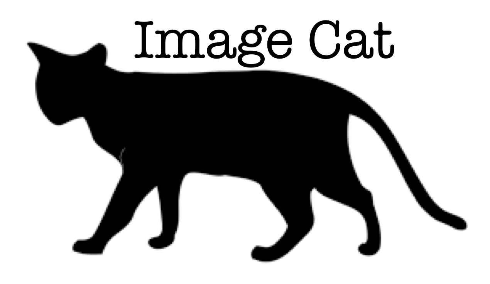
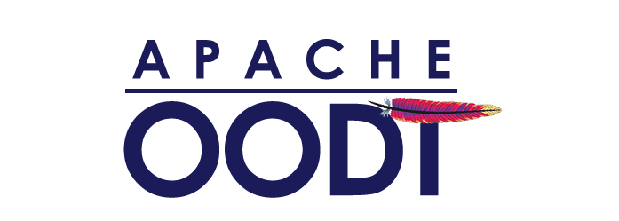
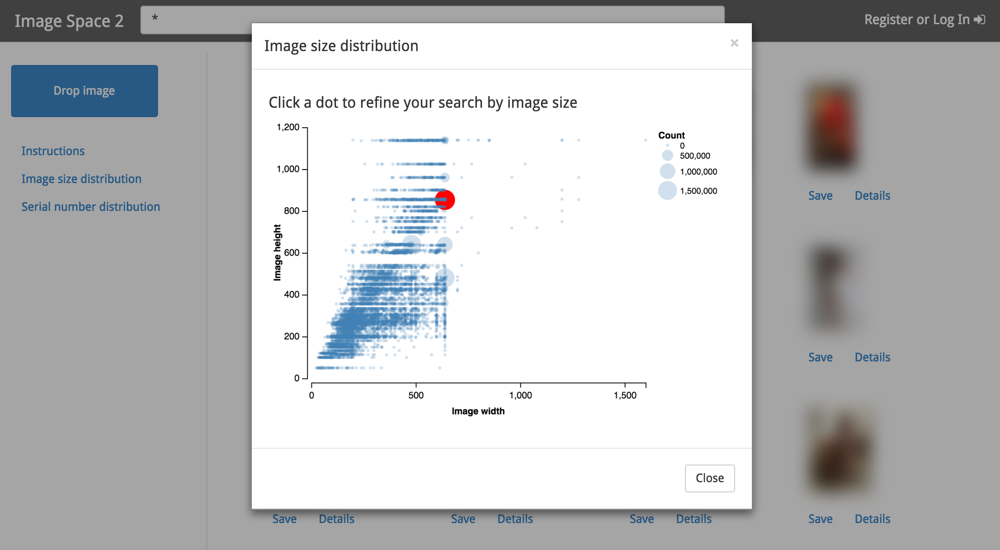

ImageCat is a RADiX overlay on Mnemosyne 1.11.0. It ingests images in place, extracts MIME/EXIF with Apache Tika, OCRs them with Paddle/RapidOCR into Apache Solr 10, and serves the catalog through ImageSpace (search, CLIP similar, fg/bg, IQR). OPSUI at /opsui/ is the job console. This ImageSpace is new work inspired by NASA JPL's efforts on the DARPA MEMEX program.
Source: github.com/chrismattmann/imagecat. Wiki: Installation and How to Run.


ImageCat is a RADiX overlay on Mnemosyne. The ImageSpace desktop in this tarball is inspired by work NASA JPL, Kitware, and Continuum Analytics did on the DARPA MEMEX program.